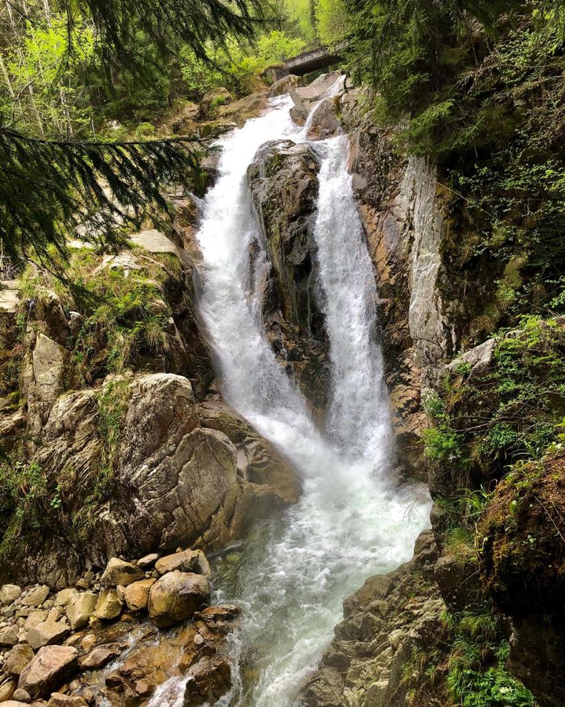
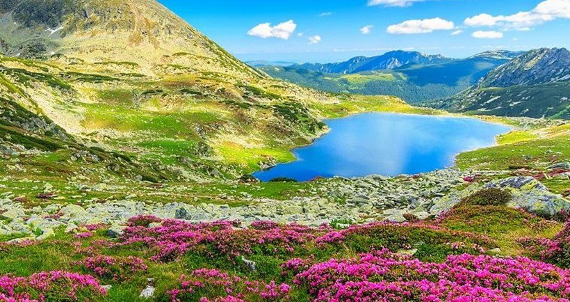
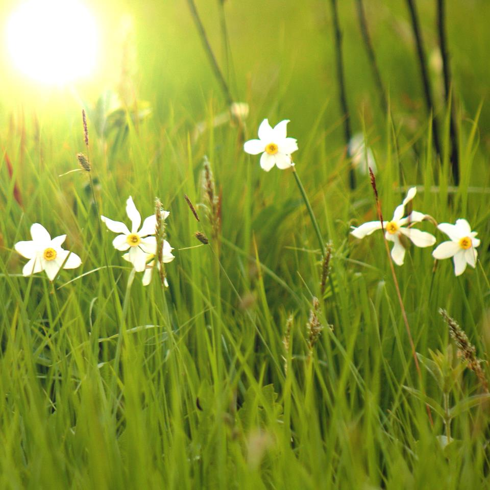

Parcul Național Retezat
Locuri de vizitat
-
Cascada Lolaia
Atractia spectaculoasa din vestul tarii Un peisaj sălbatic ca-n poveşti şi o privelişte spectaculoasă – asta pot găsi turiştii care ajung într-un loc minunat din vestul ţării, Cascada Lolaia.Această atracţie naturală impresionantă se găseşte în judeţul Hunedoara, în Parcul Naţional Retezat, considerat cel mai frumos parc naţional din România. Cascada Lolaia se află la o altitudine de 1.050 de metri şi s-a format pe pârâul Nucşoara, care colectează apele a patru văi glaciare din Parcul Naţional Retezat, şi anume Stănişoara, Pietrele, Valea Rea şi Galeşu. Cascada dă un farmec aparte peisajului sălbatic din zonă, indiferent de anotimp, şi îi impresionează pe turişti prin frumuseţea sa.
-
Lacul Bucura
Marele lac glaciar din retezat Lacul Bucura este unul din ochii albaștrii ai Parcului Național Retezat din Munții Retezat și este cel mai mare lac glaciar din România. Lacul Bucura se află în căldarea Bucura, sub Vârful Peleaga și Șaua Bucurei, fiind orientat în direcția nord – sud, la altitudinea de 2040 m.Suprafata lacului este de 8,90 ha, lungimea de 550 m și lățimea medie de 160 m, perimetrul de circa 1390 m. Lățimea maximă este de 225 m, iar volumul estimat este de 625.000 m³. Lacul are o aproape o formă aproape dreptunghiulară. Adâncimea maximă a apei lacului este de 15,5 m, în dreptul intrării Izvorului Pelegii în lac. Lacul este alimentat de cinci izvoare principale. Apa lacului deversează spre Lacul Lia, cu un debit de aproximativ 250 l pe secundă. Lacul Bucura impresionează prin suprafaţa extraordinară, fără să fie foarte adânc. Împreună cu abrupturile stâncoase din jur, Lacul Bucura și Lacul Lia fac o priveliște grandioasă.
-
Fanatele cu Narcise
Pentru a vă simţi ca în vremurile postglaciare puteţi merge la Fâneţele cu Narcise. Aici cresc încă plante ce au rezistat în timp, din vremurile reci, când toată zona era o imensă taiga, asemănătoare cu cea din Siberia de astăzi. Vă întrebaţi cum de a fost posibil acest lucru? Ei bine, prin bolovănișul de granit de sub sol, curg ape reci din Munţii Retezat, care au efect de frigider şi răcesc locul. Şi astfel, s-a păstrat aici o insulă de refugiu, cu un climat rece şi umed, unde puteţi vedea plante ce au supraviețuit de pe vremea ghețarilor, precum şi fluturi rari.